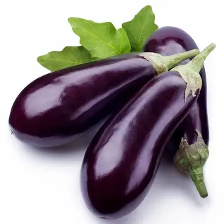
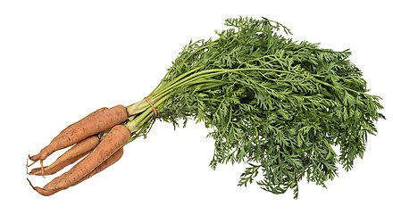
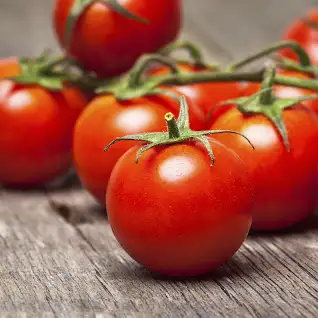
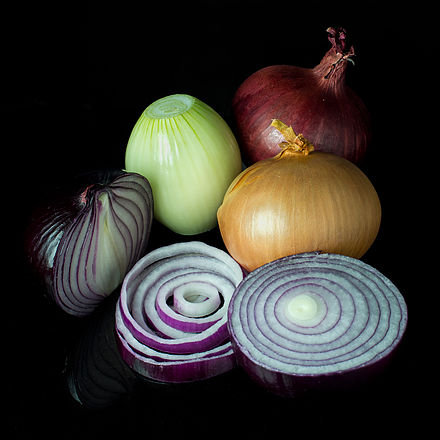

Eggplant
Description
The eggplant is a delicate, tropical perennial plant often cultivated as a tender or half-hardy annual in temperate climates. The stem is often spiny. The flowers are white to purple in color, with a five-lobed corolla and yellow stamens. Some common cultivars have fruit that is egg-shaped, glossy, and purple with white flesh and a spongy, "meaty" texture. Some other cultivars are white and longer in shape. The cut surface of the flesh rapidly turns brown when the fruit is cut open (oxidation).
Use
Eggplant is used in the cuisines of many countries. Due to its texture and bulk, it is sometimes used as a meat substitute in vegan and vegetarian cuisines. Eggplant flesh is smooth. Its numerous seeds are small, soft and edible, along with the rest of the fruit, and do not have to be removed. Its thin skin is also edible, and so it does not have to be peeled. However, the green part at the top, the calyx, does have to be removed when preparing an eggplant for cooking.

Carrot
Description
The carrot (Daucus carota subsp. sativus) is a root vegetable, typically orange in color, though heirloom variants including purple, black, red, white, and yellow cultivars exist, all of which are domesticated forms of the wild carrot, Daucus carota, native to Europe and Southwestern Asia.
Use
The most commonly eaten part of the plant is the taproot, although the stems and leaves are also eaten. The domestic carrot has been selectively bred for its enlarged, more palatable, less woody-textured taproot.

Potato
Description
The potato is a starchy root vegetable native to the Americas that is consumed as a staple food in many parts of the world. Potatoes are tubers of the plant Solanum tuberosum, a perennial in the nightshade family Solanaceae.
Use
Potatoes are used to brew alcoholic beverages such as vodka, poitín, or akvavit.
They are also used as fodder for livestock. Livestock-grade potatoes, considered too small or blemished to sell or market for human use but suitable for fodder use, have been called chats in some dialects. They may be stored in bins until use; they are sometimes ensiled. Some farmers prefer to steam them rather than feed them raw and are equipped to do so efficiently.
Potato starch is used in the food industry as a thickener and binder for soups and sauces, in the textile industry as an adhesive, and for the manufacturing of papers and boards.

Tomato
Description
The tomato is the edible berry of the plant Solanum lycopersicum, commonly known as the tomato plant. The species originated in western South America, Mexico, and Central America. The Nahuatl word tomatl gave rise to the Spanish word tomate, from which the English word tomato derives. Its domestication and use as a cultivated food may have originated with the indigenous peoples of Mexico. The Aztecs used tomatoes in their cooking at the time of the Spanish conquest of the Aztec Empire, and after the Spanish encountered the tomato for the first time after their contact with the Aztecs, they brought the plant to Europe, in a widespread transfer of plants known as the Columbian exchange.
Use
Though it is botanically a berry, a subset of fruit, the tomato is considered a vegetable for culinary purposes. It has a strong savoury umami flavour, rather than significant sweetness (see above). Chef Heston Blumenthal observed that the inner pulp had more flavour that the flesh; a subsequent academic study in which he participated confirmed that the pulp had up to eleven times more glutamic acid, which carries umami flavour, than the flesh.

Onion
Description
An onion, also known as the bulb onion or common onion, is a vegetable that is the most widely cultivated species of the genus Allium. The shallot is a botanical variety of the onion which was classified as a separate species until 2011. Its close relatives include garlic, scallion, leek, and chive.
Use
Onions are commonly chopped and used as an ingredient in various hearty warm dishes, and may also be used as a main ingredient in their own right, for example in French onion soup, creamed onions, and onion chutney. They are versatile and can be baked, boiled, braised, grilled, fried, roasted, sautéed, or eaten raw in salads. Their layered nature makes them easy to hollow out once cooked, facilitating stuffing them, as in Turkish sogan-dolma.
